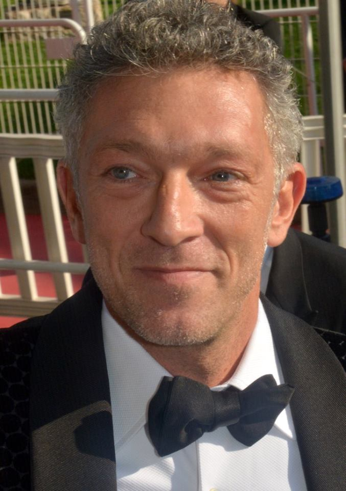
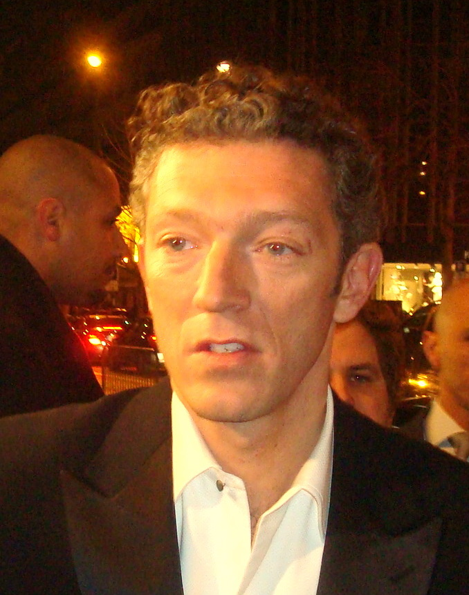
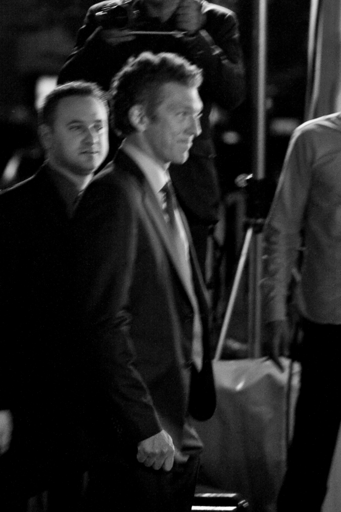
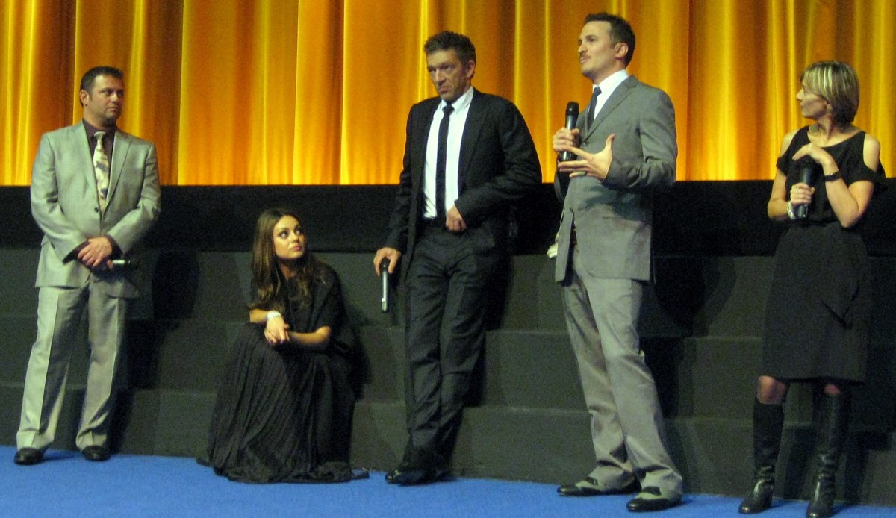
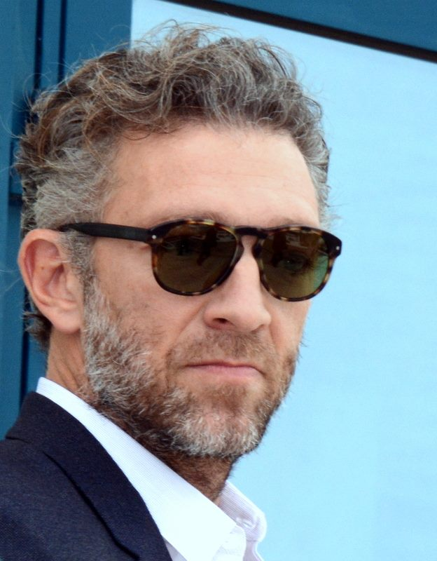
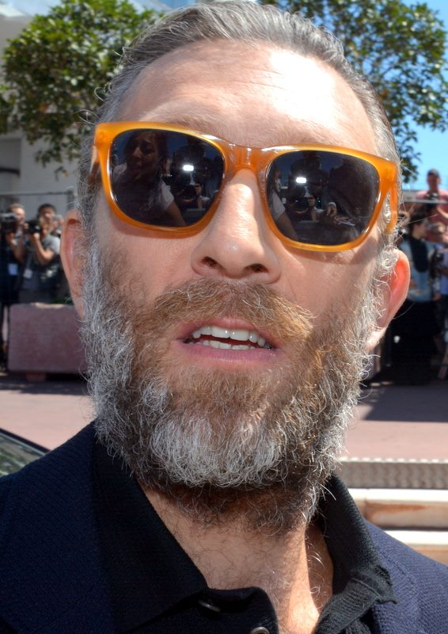

Vincent Cassel Biography: Age, Movies, Awards, Net Worth and Family
He is the French actor who can be terrifying, funny and tender in the same scene — the angry young man of La Haine, the gangster Jacques Mesrine, the ballet director of Black Swan, the thief of Ocean’s Twelve. Vincent Cassel, born in Paris in 1966 into one of France’s great acting families, has spent nearly forty years moving between French art-house cinema and Hollywood, speaking five languages, winning a César for playing France’s most famous criminal, and marrying Monica Bellucci after meeting her on set. He turned 60 on 23 November 2026 — and four days later, Netflix released his new film, The Hunchback, Soul of Paris, in which he plays Quasimodo. He is the sixth French celebrity on Stars of Europe, after Omar Sy, Marion Cotillard, Kylian Mbappé, Jean Reno and Catherine Deneuve.

Key takeaways
- Born 23 November 1966 in Paris, age 60; his career runs from 1987 to the present, nearly forty years.
- His breakthrough was La Haine (1995), as Vinz, a troubled young man in the Paris outskirts — two César nominations, for Best Actor and Most Promising Actor.
- He won the César Award for Best Actor in 2009 for playing the criminal Jacques Mesrine in Mesrine (2008), and has seven César nominations in total.
- He met Monica Bellucci on the set of L’Appartement (1996); they married in 1999 and divorced in 2013, and have two daughters, Deva and Léonie.
- His best-known English-language work: Elizabeth (1998), Shrek (2001), Ocean’s Twelve (2004) and Ocean’s Thirteen (2007), Eastern Promises (2007), Black Swan (2010), Jason Bourne (2016) and Westworld (2020).
- His new film, The Hunchback, Soul of Paris, was released worldwide on Netflix on 27 November 2026 — four days after his 60th birthday — with Cassel playing Quasimodo.
- No childhood photograph of him exists on Wikimedia Commons — the earliest free-licence photographs found are adult portraits from 2010 — and no reliable net-worth figure exists, so none is given.
- With Cassel, the French section reaches six biographies, the largest section on the site.
Who Is Vincent Cassel?
| Full name | Vincent Crochon (born Vincent Cassel) |
|---|---|
| Date of birth | 23 November 1966 |
| Birthplace | Paris, France |
| Nationality | French (also held Brazilian citizenship until 2018) |
| Profession | Actor |
| Years active | 1987–present |
| Spouse | Monica Bellucci (married 1999–2013, divorced); Tina Kunakey (married 2018; separated 2023) |
| Partner | Narah Baptista (2023–present) |
| Children | 4 — Deva, Léonie, Amazonie, Caetano |
| Net worth | Not stated — no reliable estimate found |
Vincent Cassel is one of the most recognisable French actors of his generation, and one of the few who has built a career of equal weight in French and in English-language cinema. In France he is the star of La Haine, the most important French film of the 1990s, and the winner of a César for playing Jacques Mesrine, France’s “public enemy number one”. In English he is the elegant thief of the Ocean’s films, the voice of Monsieur Hood in Shrek, the menacing Kirill of Eastern Promises, the ballet director of Black Swan and the villain of Jason Bourne. He speaks five languages, has lived in Rio de Janeiro, practises capoeira, and at 60 is still taking the hardest roles — most recently Quasimodo, under prosthetics, in a Netflix film released four days after his birthday.
His story is also a family story. His father, Jean-Pierre Cassel, was one of France’s best-loved actors; his brother Mathias is a rapper; his half-sister Cécile is an actress; and his first wife, Monica Bellucci, is one of the most famous Italian actresses alive, and the subject of article #10 on this site. Cassel has never been a Hollywood star in the narrow sense — he has always lived in Paris, worked in French first, and chosen the role over the pay cheque — and that is exactly why his career has lasted nearly forty years.
Age and Early Life — Paris and the Cassel Family
Vincent Crochon — he was born Vincent Cassel, taking his father’s stage name — was born on 23 November 1966 in Paris, the son of the acclaimed actor Jean-Pierre Cassel (born Jean-Pierre Crochon) and the journalist Sabine Litique. He is 60 years old. His father was a fixture of French cinema and theatre from the 1950s onwards, and the house Cassel grew up in was a show-business house: his brother, Mathias, became a rapper with the group Assassin under the name “Rockin’ Squat”, and his half-sister, Cécile Cassel, is also an actress.
He went to various schools, including a Catholic school, and grew up without religion — he has described himself as “totally secular”, with a tremendous respect for life. His father died of cancer on 19 April 2007, aged 74, when Cassel was 40 and at the height of his fame. Cassel has said little in public about his childhood, and there are no childhood photographs of him on Wikimedia Commons: the earliest free-licence photographs found are adult portraits, from 2010 onwards. His career, by the record, runs from 1987, and one of his first on-screen appearances was a small part in a 1994 Renault Clio advert that was used in the United Kingdom. It was not the kind of start that promises a career. The film that changed everything came a year later.


La Haine — The Breakthrough
La Haine — Hate — was directed by Mathieu Kassovitz and released in 1995. Cassel played Vinz, a troubled Jewish youth living in the deprived outskirts of Paris, in the twenty-four hours after a riot, carrying a policeman’s lost gun and looking for a reason to use it. The film was shot in black and white, it won Best Director at Cannes, and it became the defining French film of its decade — quoted, taught and argued over ever since. Cassel was 28, and the part made him: he was nominated for two César Awards for it, for Best Actor and for Most Promising Actor, an unusual double that said, in one year, that he had both arrived and was only beginning.
Throughout the rest of the 1990s he worked steadily in French films, building a reputation for intensity and for choosing difficult material. There was the violent thriller Dobermann (1997), the historical epic The Messenger: The Story of Joan of Arc (1999), in which he played Gilles de Rais for Luc Besson, and the crime thriller The Crimson Rivers (2000). He was not a romantic lead and he was not a comic actor: he was the man you cast when a film needed danger, and he played it without softening the edges. That reputation is what took him, in the same years, into his first English-language roles.
L’Appartement and Monica Bellucci
In 1996, a year after La Haine, Cassel starred opposite Monica Bellucci in the moody French film L’Appartement (The Apartment). The two had not yet married — they met on this set. The film was a critical success: it won the BAFTA Award for Best Film Not in the English Language and the first British Independent Film Award for Best Film in a Foreign Language, and it was a modest hit in France, with 152,714 admissions in total. It was never released theatrically in the United States, and reached American audiences on DVD in 2006.
The film matters on this site for a second reason: it is where the Cassel–Bellucci story begins. They married on 2 August 1999 in Monaco, and had two daughters, Deva, born 12 September 2004, and Léonie, born 21 May 2010. They announced their separation on 26 August 2013, and later divorced. They also worked together again after they married — most famously in Gaspar Noé’s highly controversial Irréversible (2002), which Cassel acted in and co-produced, and in which he appears fully nude alongside Bellucci. Read Bellucci’s biography here: she is article #10 on Stars of Europe, and the first Italian subject on the site.
Into English-Language Films
From the early 2000s, Cassel began appearing regularly in English-language films, without ever leaving French cinema behind. In 1998 he had already played Henry, Duc d’Anjou, in Elizabeth, opposite Cate Blanchett. In 2001 he voiced Monsieur Hood in Shrek and starred in the thriller Birthday Girl, and he also dubbed the voice of Diego in the French version of the Ice Age franchise and Rodney Copperbottom in the French version of Robots. In 2004 and 2007 he played the elegant French thief François Toulour in Ocean’s Twelve and Ocean’s Thirteen, opposite George Clooney and Brad Pitt — the role that made him recognisable to mainstream audiences worldwide, and one in which he got to show off his capoeira, the Brazilian martial art he practises. In 2005 he starred in the thriller Derailed, with Clive Owen and Jennifer Aniston.
The performance that earned him the most critical praise in English came in 2007, in David Cronenberg’s thriller Eastern Promises, in which he starred opposite Viggo Mortensen and Naomi Watts. The film premiered at the Toronto International Film Festival, where it won the Audience Prize for best film, and the critics singled Cassel out: one called his performance “particularly delicious”, another wrote that he “literally flings himself into” the role. He had learned basic Russian for the part — one of five languages he speaks, alongside his native French, English, Portuguese, Spanish and Italian.


Mesrine — The César
In October 2008, Cassel was signed to be the face of a new Yves Saint Laurent men’s fragrance, La Nuit de l’Homme, launched worldwide in 2009 — a sign of how far his fame had travelled beyond the cinema. The same year he took on the role that would define his career in France: Jacques Mesrine, the criminal who was France’s “public enemy number one” in the 1970s, in a two-part film, Mesrine (2008). Cassel played him across both parts, from the young robber to the hunted fugitive, and won the César Award for Best Actor for the performance in 2009. It remains his only César win, from seven nominations in total: two for La Haine, and one each for Read My Lips (2001), Mesrine, Mon Roi (2015), It’s Only the End of the World (2016) and The Specials (2019).
Also in 2008 and 2009 he showed how wide his range had become. He starred in the Portuguese-language Brazilian film Adrift (À Deriva), and he made his debut as a singer, on Zap Mama’s album ReCreation, singing alongside them on the singles “Paroles, Paroles” and “Non, Non, Non”. By the end of the decade he was 43, a César winner, a fragrance face, a singer, and an actor who could work in French, English and Portuguese — and the next decade would give him his biggest international audience yet.
Black Swan and the 2010s
In 2010, Cassel played Thomas Leroy in Darren Aronofsky’s Black Swan, alongside Natalie Portman and Mila Kunis — the demanding, manipulative ballet director at the centre of the film’s psychological breakdown. The film was a critical and commercial success, and for his performance Cassel was nominated, alongside his cast, for the Screen Actors Guild Award for Outstanding Performance by a Cast in a Motion Picture. It is the role most English-speaking audiences know him by, and it fixed his image abroad: the European, the perfectionist, the man who pushes the heroine until she breaks.


The 2010s kept him working on both sides of the Atlantic. In 2011 he played the lead role in the French-Spanish thriller-drama The Monk, directed by Dominik Moll — one critic wrote that he “exudes otherworldly gravitas” — and starred in the German-Canadian historical film A Dangerous Method, directed by David Cronenberg, opposite Keira Knightley, Michael Fassbender and Mortensen, his second film with Mortensen. In 2014 he portrayed the Beast opposite Léa Seydoux as Belle in the French-language adaptation of Beauty and the Beast, which was screened out of competition at the Berlin International Film Festival and became a box-office success in France — and in Japan it topped the box office on its release, the first non-English-language foreign film to do so since Red Cliff II in 2009, and the first French film since Kassovitz’s The Crimson Rivers in 2001.
In 2016 he was featured in the American action thriller Jason Bourne, directed by Paul Greengrass — the fifth film in the Bourne series, which grossed more than $400 million worldwide despite mixed reviews. The same year he attracted critical acclaim for his performance as Antoine in Xavier Dolan’s It’s Only the End of the World, which premiered at the Cannes Film Festival: for that role he won the Canadian Screen Award for Best Supporting Actor, and was nominated for the César for Best Supporting Actor. In 2019 he played the lead role in The Specials, directed by Éric Toledano and Olivier Nakache, based on the true story of Stéphane Benhamou, who ran an organisation helping people with autism find employment and activities outside institutions. It was screened out of competition at the 2019 Cannes Film Festival, and Cassel was nominated for the César for Best Actor.


Recent Work — Westworld, The Three Musketeers and The Shrouds
In 2020, Cassel portrayed the trillionaire Engerrand Serac, the main antagonist of the third season of the HBO series Westworld — his biggest television role, and one that put him in front of the largest audience of his career. In 2021 he narrated the documentary Reset, directed by Thierry Donard. In 2023 he starred in the Apple TV+ spy thriller series Liaison opposite Eva Green, and as Athos in both of Martin Bourboulon’s two French film adaptations of Alexandre Dumas’s The Three Musketeers — The Three Musketeers: D’Artagnan and The Three Musketeers: Milady. In the same year he was revealed as the voice actor for the United Nations’ French agent Victor Chevalier in the 2024 video game Tekken 8, his first role in a video game — he had first come to know Tekken back in the 1990s, and his favourite character was Eddy Gordo. In 2024 came his third collaboration with David Cronenberg, playing the leading role of the grieving tech entrepreneur Karsh in The Shrouds, which played in competition at Cannes 2024. In 2026 he starred in the music video for “Camera” by Charli XCX, directed by Aidan Zamiri.


The Hunchback, Soul of Paris — 60 and Quasimodo
Cassel turned 60 on 23 November 2026. Four days later, on 27 November 2026, Netflix released his new film, The Hunchback, Soul of Paris, worldwide, with Cassel playing Quasimodo under prosthetics. The timing is the reason this article is being published now: a 60th birthday and a new film in the same week, and a role — the bell-ringer of Notre-Dame — that is one of the most famous in French literature. It is also a reminder of how Cassel’s career works: he has never chased the obvious leading-man parts, and at 60 he is taking a part that hides his face and asks the audience to look past it.
Personal Life
Cassel met Monica Bellucci on the set of their 1996 film L’Appartement. They married on 2 August 1999 in Monaco. They have two daughters, Deva, born 12 September 2004, and Léonie, born 21 May 2010. At the age of 15, Deva became Dolce & Gabbana’s muse for their Dolce Shine perfume, and later became their runway model. Cassel and Bellucci announced their separation on 26 August 2013, and later divorced.
He married the French model Tina Kunakey, 21 years old at the time, on 24 August 2018 in Bidart, France, after a relationship of more than two years. They have a daughter, Amazonie, born 19 April 2019. Cassel and Kunakey separated in 2023. In October 2023 it was reported that he was in a relationship with the Brazilian model Narah Baptista, who is twenty-nine years younger than him. On 7 January 2025 he welcomed the birth of his fourth child, and Baptista’s first, a son named Caetano.
Besides his native French, Cassel speaks English, Portuguese, Spanish, Italian and basic conversational Russian, which he learned for his role in Eastern Promises. He lived in Rio de Janeiro for five years, before moving back to Paris in 2018, and he used to have Brazilian citizenship. He is known for his strong identification with Brazil, and for practising capoeira — he displayed that talent in Ocean’s Twelve. He went to various schools, including a Catholic school, and eventually became irreligious.
There are no photographs of his children, his wives or his parents on Wikimedia Commons, and none are used in this article: the photographs here are all of Cassel himself, at festivals and press events. His family life is stated here plainly, from his Wikipedia page, and left at that.
Awards
Cassel’s honours, in brief: the César Award for Best Actor in 2009 for Mesrine, from seven César nominations in total — two for La Haine (Best Actor and Most Promising Actor), and one each for Read My Lips (2001), Mesrine, Mon Roi (2015), It’s Only the End of the World (2016) and The Specials (2019); the Canadian Screen Award for Best Supporting Actor for It’s Only the End of the World; a Screen Actors Guild Award nomination for Outstanding Performance by a Cast, for Black Swan; and a European Film Award nomination. He has never been nominated for an Academy Award — his honours are French and European, which is where his career belongs.
Filmography Highlights
| Year | Title | Notes |
|---|---|---|
| 1995 | La Haine | Breakthrough; as Vinz; 2 César nominations |
| 1996 | L’Appartement | With Monica Bellucci; BAFTA Best Film Not in the English Language |
| 1997 | Dobermann | Violent thriller |
| 1998 | Elizabeth | As Henry, Duc d’Anjou |
| 1999 | The Messenger: The Story of Joan of Arc | As Gilles de Rais; Luc Besson |
| 2000 | The Crimson Rivers | Crime thriller |
| 2001 | Brotherhood of the Wolf | Genre-bending hit |
| 2001 | Shrek | Voice of Monsieur Hood |
| 2001 | Read My Lips | César nomination |
| 2002 | Irréversible | Acted and co-produced; with Bellucci |
| 2004 | Ocean’s Twelve | As François Toulour |
| 2005 | Derailed | Thriller |
| 2007 | Ocean’s Thirteen | As François Toulour |
| 2007 | Eastern Promises | Cronenberg; TIFF Audience Prize |
| 2008 | Mesrine (two parts) | As Jacques Mesrine; César Best Actor 2009 |
| 2009 | Adrift (À Deriva) | Brazilian, Portuguese-language |
| 2010 | Black Swan | As Thomas Leroy; SAG ensemble nomination |
| 2011 | The Monk | Lead role |
| 2011 | A Dangerous Method | Cronenberg |
| 2014 | Beauty and the Beast | As the Beast, opposite Léa Seydoux |
| 2015 | Mon Roi | César nomination |
| 2016 | Jason Bourne | $400m+ worldwide |
| 2016 | It’s Only the End of the World | As Antoine; Canadian Screen Award |
| 2019 | The Specials | César nomination |
| 2020 | Westworld (TV) | As Engerrand Serac, season 3 |
| 2023 | Liaison (TV) | Apple TV+, with Eva Green |
| 2023 | The Three Musketeers: D’Artagnan | As Athos |
| 2023 | The Three Musketeers: Milady | As Athos |
| 2024 | The Shrouds | Cronenberg; as Karsh |
| 2026 | The Hunchback, Soul of Paris | Netflix; as Quasimodo |
FAQs
How old is Vincent Cassel?
Vincent Cassel was born on 23 November 1966 in Paris, and is 60 years old as of November 2026. He turned 60 on 23 November 2026, four days before Netflix released his new film, The Hunchback, Soul of Paris.
Was Vincent Cassel married to Monica Bellucci?
Yes. Cassel met Monica Bellucci on the set of L’Appartement (1996). They married on 2 August 1999 in Monaco, and have two daughters, Deva (born 2004) and Léonie (born 2010). They announced their separation on 26 August 2013 and later divorced. Read Bellucci’s biography here.
What is Vincent Cassel’s most famous film?
His breakthrough was La Haine (1995), the defining French film of its decade. His most honoured performance is Mesrine (2008), for which he won the César for Best Actor. His best-known English-language role is Thomas Leroy in Black Swan (2010).
Did Vincent Cassel win an Oscar?
No. He has never been nominated for an Academy Award. His highest honours are the César Award for Best Actor (2009) for Mesrine and the Canadian Screen Award for Best Supporting Actor for It’s Only the End of the World, plus a Screen Actors Guild ensemble nomination for Black Swan.
What is Vincent Cassel’s net worth?
No reliable published estimate of Vincent Cassel’s net worth was found, so no figure is given in this article, and he does not appear on this site’s Top 10 Richest Celebrities page. One website claims $40 million, but it is a single source with no second source behind it, so it is not used here. See the Top 10 Richest page for the current ranking.
What is The Hunchback, Soul of Paris?
The Hunchback, Soul of Paris is a Netflix film released worldwide on 27 November 2026, four days after Cassel turned 60, in which he plays Quasimodo under prosthetics.
How many children does Vincent Cassel have?
Four. Two daughters with Monica Bellucci — Deva (born 12 September 2004) and Léonie (born 21 May 2010) — a daughter, Amazonie (born 19 April 2019), with Tina Kunakey, and a son, Caetano (born 7 January 2025), with Narah Baptista.
Sources
Facts in this article were checked against: Wikipedia — Vincent Cassel (born Vincent Crochon, 23 November 1966, Paris; parents Jean-Pierre Cassel and Sabine Litique; brother Mathias “Rockin’ Squat”; half-sister Cécile Cassel; years active 1987–present; 1994 Renault Clio advert; La Haine 1995, two César nominations; L’Appartement 1996, BAFTA and first BIFA, 152,714 admissions; Dobermann 1997; Elizabeth 1998 as Henry, Duc d’Anjou; The Messenger 1999 as Gilles de Rais; The Crimson Rivers 2000; Brotherhood of the Wolf 2001; Shrek 2001, voice of Monsieur Hood; Birthday Girl 2001; French dub voices Diego in Ice Age and Rodney in Robots; Irréversible 2002, acted and co-produced; Ocean’s Twelve 2004 and Ocean’s Thirteen 2007 as François Toulour; Derailed 2005; Eastern Promises 2007, TIFF Audience Prize, critical praise; Yves Saint Laurent La Nuit de l’Homme face, October 2008; Mesrine two-part 2008, César Best Actor 2009; Adrift 2009; Zap Mama ReCreation singing debut; Black Swan 2010, SAG ensemble nomination; The Monk 2011; A Dangerous Method 2011; Beauty and the Beast 2014, Japanese box-office record; Jason Bourne 2016, $400m+ worldwide; It’s Only the End of the World 2016, Canadian Screen Award; The Specials 2019; Westworld season 3, 2020, as Engerrand Serac; Reset narration 2021; Liaison 2023; The Three Musketeers: D’Artagnan and Milady 2023 as Athos; Tekken 8 voice 2024; The Shrouds 2024; Charli XCX “Camera” music video 2026; personal life — met Bellucci on L’Appartement, married 2 August 1999 Monaco, daughters Deva 12 September 2004 and Léonie 21 May 2010, separation announced 26 August 2013, divorced; Tina Kunakey married 24 August 2018 Bidart, daughter Amazonie 19 April 2019, separated 2023; Narah Baptista relationship revealed October 2023, son Caetano born 7 January 2025; languages French, English, Portuguese, Spanish, Italian and basic Russian; lived in Rio de Janeiro five years, back to Paris 2018, held Brazilian citizenship until 2018; capoeira practitioner; irreligious, “totally secular” quote; father Jean-Pierre Cassel died of cancer 19 April 2007 aged 74; Deva Dolce & Gabbana muse at 15); Martin Cid Magazine (The Hunchback, Soul of Paris, Netflix worldwide release 27 November 2026, Cassel as Quasimodo, four days after he turns sixty). No net-worth figure is given because no reliable estimate surfaced. All writing is original to Stars of Europe. Deliberately left out: the single-source $40 million net-worth claim; gossip. Photographs used: the Cannes 2018 portrait (CC BY-SA 4.0, hero image); the Paris portrait (public domain); the Toronto 2010 portrait (CC BY-SA 2.0); the Black Swan 2010 press photograph (CC BY 2.0); the Cannes 2015 portrait (CC BY-SA 3.0); and the Cannes 2016 portrait (CC BY-SA 3.0) — each visually checked against the person named, and each licence confirmed on its Wikimedia Commons file page on 28 November 2026.